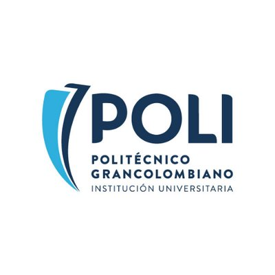
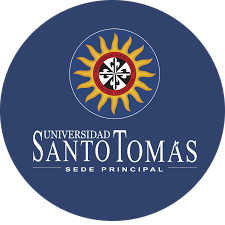
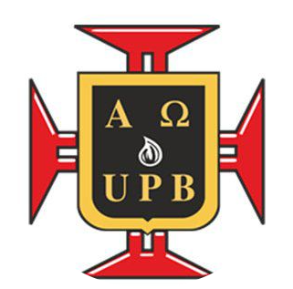
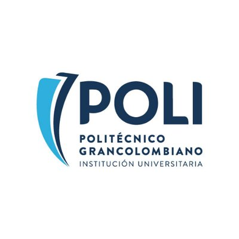
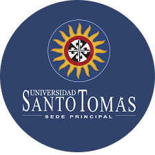
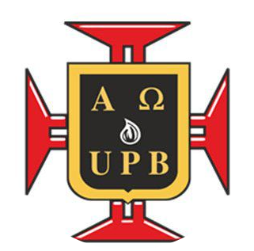
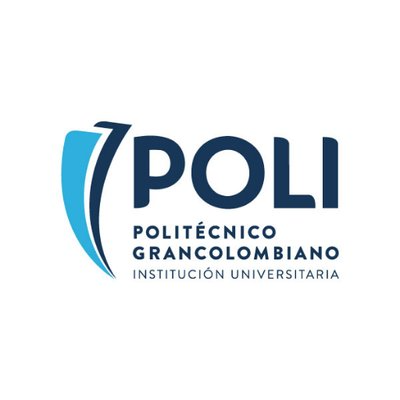
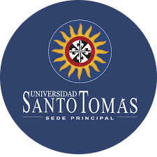
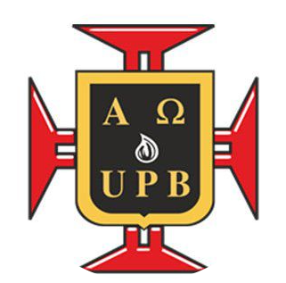

.png) 





 (1).png)
Con cincuenta años de trayectoria, el Programa de Diseño Gráfico de Utadeo se enfoca en la formación de profesionales competentes en el desarrollo integral e innovador de propuestas y proyectos insertos en el campo de la comunicación gráfica y las mediaciones visuales ancladas en la sociedad y en entornos vitales del mundo contemporáneo. Formamos diseñadores que piensan, ven, leen, cuestionan, imaginan e interpretan la realidad del mundo -diversa y disímil- para transformarlo, para actuar desde él y en él.
En la carrera de Diseño Gráfico conocerás todas las posibilidades creativas que ofrece un programa en el que la ilustración, el diseño editorial, la animación 2d o 3d, y el mundo multimedia se combinan para potenciar la creatividad al máximo.
El programa de Diseño Gráfico forma profesionales en el campo de la comunicación visual con una concepción estratégica que les permite ofrecer propuestas novedosas en diversos medios impresos, digitales o audiovisuales que respondan a necesidades de comunicación, información o entretenimiento en forma efectiva y comprensible.
El diseño Gráfico como disciplina estudia y genera sistemas y estrategias gráficas de comunicación a través de las cuales el hombre se relaciona con su entorno. Desde su quehacer el Programa tiene una propuesta formativa que apunta a egresar profesionales formados para el desarrollo de Proyectos en el campo de la comunicación gráfica, audiovisual, y multimedial.
Con la excelencia y la calidad que caracteriza a la Universidad del Norte, el Programa de Diseño Gráfico brinda a sus estudiantes una formación integral y los conocimientos necesarios para su desempeño en todas las áreas del diseño gráfico.
Videoclips, audiovisuales, animaciones bi y tridimensionales y páginas web, evolucionan cada vez más con la visión creativa y la conceptualización del diseñador grafico; igualmente, hallamos el diseño gráfico en revistas, periódicos o en un cuento para niños, en el maravilloso mundo de la lúdica, en móviles o simplemente en texturas, ilustraciones o estampados que día a día llevamos en una camiseta, en la carátula de un cd, en un papel de colgadura y hasta en los módulos o baldosas que vemos en un piso.
La Maestría se ha pensado como un escenario para desarrollar (a partir de proyectos) el potencial de aquellas personas interesadas en enfrentarse a nuevos retos desde la visión del diseño de la Universidad de los Andes. Así, es más un espacio para cuestionar, sorprenderse, evolucionar, equivocarse, confiar, aprender, provocar y sobre todo proponer para un contexto y una sociedad que están esperando nuevas preguntas y respuestas innovadoras.


